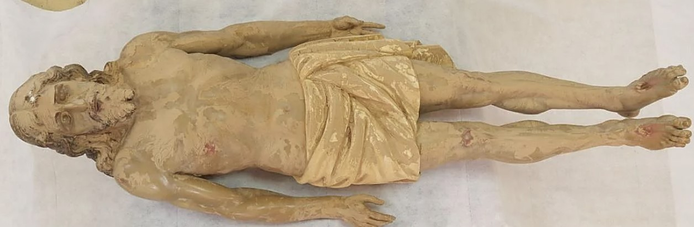

← Web principal
← Web principal
Escultura afectada per la DANA i restaurada per l'IVCR+i · Generalitat Valenciana
La escultura del Crist Jacent de Paiporta fue gravemente afectada por los daños ocasionados por la DANA. Tras su recuperación, el Institut Valencià de Conservació, Restauració i Investigació (IVCR+i) llevó a cabo los trabajos de conservación y restauración necesarios para devolver la obra a su estado original.
La intervención ha sido realizada por el equipo multidisciplinar del IVCR+i, formado por restauradores, historiadores del arte y científicos especializados en análisis de materiales, siguiendo los más estrictos criterios de conservación-restauración reconocidos internacionalmente.
Este dossier recoge el proceso completo de la intervención: desde el diagnóstico inicial hasta la documentación final mediante modelo tridimensional.
| Denominación | Crist Jacent |
| Localidad | Paiporta (Valencia) |
| Tipología | Escultura religiosa |
| Material | Madera policromada |
| Datación | Por determinar |
| Estado | Restaurada tras DANA 2024 |
| Intervención | IVCR+i · 2024–2025 |
La obra presentaba importantes daños estructurales y pérdida de policromía debido a la exposición prolongada al agua y a las condiciones ambientales posteriores al temporal.


inicial.jpgLa intervención se desarrolló en fases sucesivas siguiendo el protocolo del IVCR+i para esculturas de madera policromada afectadas por inundación.

Todos los trabajos se han realizado respetando los principios de mínima intervención, reversibilidad y distinguibilidad, de acuerdo con los criterios internacionales del ICOM-CC y el ECCO.
Documento audiovisual que recoge las principales fases de la intervención realizada por los técnicos del IVCR+i.
Comparativa entre la documentación tridimensional de la escultura antes y después de la restauración. Usa el ratón para rotar, la rueda para hacer zoom y clic derecho para desplazar en cada visor.
| Denominación | Crist Jacent de Paiporta |
| Localidad | Paiporta (Valencia) |
| Tipología | Escultura religiosa — madera policromada |
| Causa daños | Inundación DANA · 29 oct. 2024 |
| Entidad | IVCR+i · Generalitat Valenciana |
| Año interv. | 2024–2025 |
| Análisis | Estudio organoléptico, estratigrafía, análisis fisicoquímico |
| Documentación | Fotogramétrica · Modelo OBJ 3D |